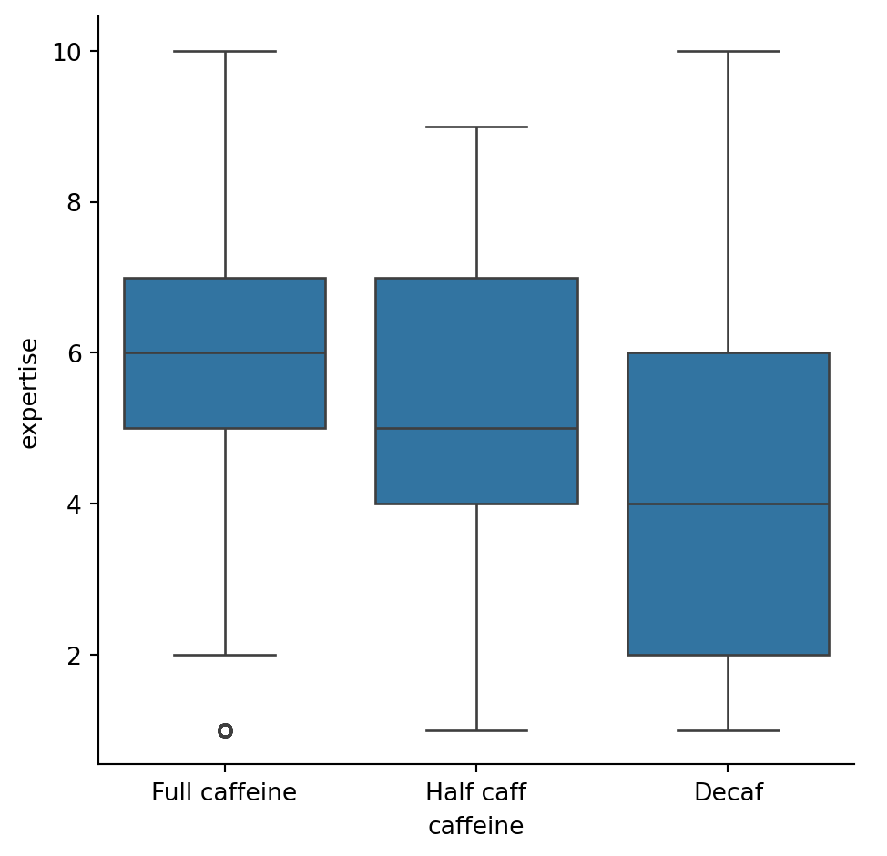

# view and understand data
# df.dtypes
# remove missing data
df_reduce = df[df["age"] != "Missing"]
df_reduce = df[df["cups"] != "Missing"]
# remove string nan
df_reduce = df[(df["caffeine"] != "Missing") & (df["caffeine"] != "nan") & (df["caffeine"] != "NA")]
# remove float nan
df_reduce = df[df["caffeine"].notna()]
# check
print(df_reduce["caffeine"].unique())
df_reduce = df[df["expertise"] != "Missing"]
# remove string nan
df_reduce = df[(df["favourite"] != "Missing") & (df["favourite"] != "nan") & (df["favourite"] != "NA")]
# remove float nan
df_reduce = df[df["favourite"].notna()]
# check
print(df_reduce["favourite"].unique())
# reduce data, dropping columns
df_reduce = df.drop(columns = ["Unnamed: 0", "where_drink", "purchase_other", "favorite_specify", "additions", "additions_other", "sweetener", "style", "coffee_a_personal_preference", "coffee_b_personal_preference", "coffee_c_personal_preference", "coffee_d_personal_preference", "prefer_abc", "prefer_ad", "wfh", "know_source", "most_paid", "most_willing", "spent_equipment", "value_equipment", "education_level", "employment_status", "number_children", "political_affiliation"])['Full caffeine' 'Half caff' 'Decaf']
['Pourover' 'Cortado' 'Regular drip coffee' 'Iced coffee' 'Cappuccino'
'Latte' 'Cold brew' 'Americano' 'Espresso' 'Other' 'Mocha'
'Blended drink (e.g. Frappuccino)']| expertise | coffee_a_bitterness | ... | coffee_d_bitterness | coffee_d_acidity | |||||||||||||||||
|---|---|---|---|---|---|---|---|---|---|---|---|---|---|---|---|---|---|---|---|---|---|
| count | mean | std | min | 25% | 50% | 75% | max | count | mean | ... | 75% | max | count | mean | std | min | 25% | 50% | 75% | max | |
| favourite | |||||||||||||||||||||
| Americano | 238.0 | 5.798319 | 1.743365 | 1.0 | 5.0 | 6.0 | 7.0 | 10.0 | 238.0 | 2.289916 | ... | 3.0 | 5.0 | 238.0 | 3.852941 | 1.055132 | 1.0 | 3.0 | 4.0 | 5.0 | 5.0 |
| Blended drink (e.g. Frappuccino) | 45.0 | 3.155556 | 2.373677 | 1.0 | 1.0 | 2.0 | 5.0 | 8.0 | 45.0 | 2.444444 | ... | 3.0 | 5.0 | 45.0 | 3.666667 | 1.348400 | 1.0 | 3.0 | 4.0 | 5.0 | 5.0 |
| Cappuccino | 330.0 | 5.545455 | 1.930257 | 1.0 | 4.0 | 6.0 | 7.0 | 9.0 | 330.0 | 2.072727 | ... | 3.0 | 5.0 | 328.0 | 3.826220 | 1.036187 | 1.0 | 3.0 | 4.0 | 5.0 | 5.0 |
| Cold brew | 105.0 | 5.057143 | 1.880203 | 1.0 | 4.0 | 5.0 | 6.0 | 10.0 | 105.0 | 2.295238 | ... | 3.0 | 5.0 | 104.0 | 3.730769 | 1.099256 | 1.0 | 3.0 | 4.0 | 5.0 | 5.0 |
| Cortado | 295.0 | 6.088136 | 1.584049 | 1.0 | 5.0 | 6.0 | 7.0 | 9.0 | 295.0 | 2.132203 | ... | 3.0 | 5.0 | 291.0 | 3.931271 | 0.925921 | 1.0 | 4.0 | 4.0 | 5.0 | 5.0 |
| Espresso | 309.0 | 6.478964 | 1.786596 | 1.0 | 6.0 | 7.0 | 8.0 | 10.0 | 309.0 | 2.074434 | ... | 3.0 | 5.0 | 305.0 | 3.885246 | 0.897701 | 1.0 | 3.0 | 4.0 | 4.0 | 5.0 |
| Iced coffee | 147.0 | 4.829932 | 2.228010 | 1.0 | 3.0 | 5.0 | 7.0 | 9.0 | 147.0 | 2.326531 | ... | 3.0 | 5.0 | 145.0 | 3.903448 | 1.042993 | 1.0 | 3.0 | 4.0 | 5.0 | 5.0 |
| Latte | 654.0 | 4.859327 | 1.981947 | 1.0 | 3.0 | 5.0 | 6.0 | 10.0 | 654.0 | 2.209480 | ... | 3.0 | 5.0 | 647.0 | 3.825348 | 1.056650 | 1.0 | 3.0 | 4.0 | 5.0 | 5.0 |
| Mocha | 116.0 | 4.724138 | 2.185272 | 1.0 | 3.0 | 5.0 | 7.0 | 8.0 | 116.0 | 2.189655 | ... | 3.0 | 5.0 | 113.0 | 3.823009 | 1.111869 | 1.0 | 3.0 | 4.0 | 5.0 | 5.0 |
| Other | 108.0 | 5.472222 | 2.193697 | 1.0 | 4.0 | 6.0 | 7.0 | 9.0 | 108.0 | 2.083333 | ... | 3.0 | 5.0 | 107.0 | 3.831776 | 1.023184 | 1.0 | 3.0 | 4.0 | 5.0 | 5.0 |
| Pourover | 1026.0 | 6.411306 | 1.511720 | 1.0 | 6.0 | 7.0 | 7.0 | 10.0 | 1026.0 | 2.003899 | ... | 2.5 | 5.0 | 1020.0 | 3.927451 | 0.930685 | 1.0 | 3.0 | 4.0 | 5.0 | 5.0 |
| Regular drip coffee | 415.0 | 5.404819 | 1.979356 | 1.0 | 4.0 | 6.0 | 7.0 | 10.0 | 415.0 | 2.257831 | ... | 3.0 | 5.0 | 413.0 | 3.748184 | 1.076910 | 1.0 | 3.0 | 4.0 | 5.0 | 5.0 |
12 rows × 72 columns

# anova: do expertise influence caffeine?
full = df_reduce.loc[
df_reduce["caffeine"] == "Full caffeine", "expertise"].dropna()
half = df_reduce.loc[
df_reduce["caffeine"] == "Half caff", "expertise"].dropna()
decaf = df_reduce.loc[
df_reduce["caffeine"] == "Decaf", "expertise"].dropna()
print(len(full), len(half), len(decaf))
stats.f_oneway(full, half, decaf)
# pvalue = 5.864143013987461e-24, really small (significant different)3439 194 133F_onewayResult(statistic=np.float64(54.2608801540126), pvalue=np.float64(5.8641430140014195e-24))caff False True
caffeine
Decaf 133 0
Full caffeine 0 3439
Half caff 0 194